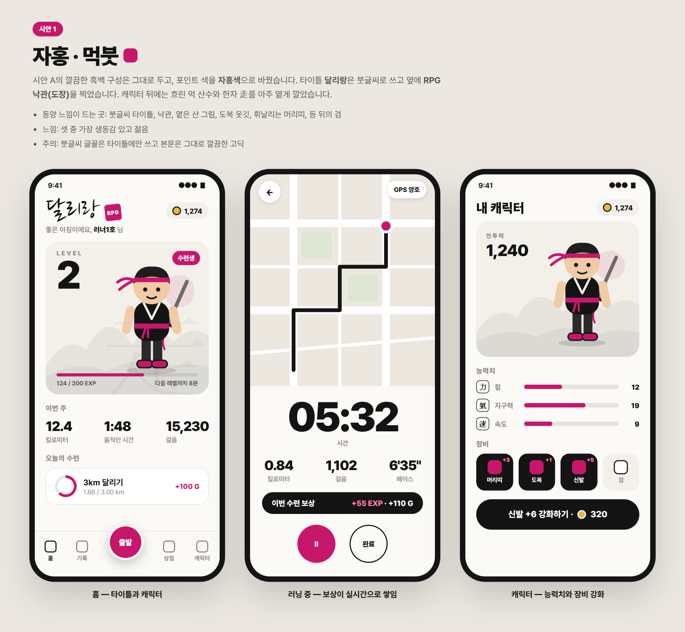
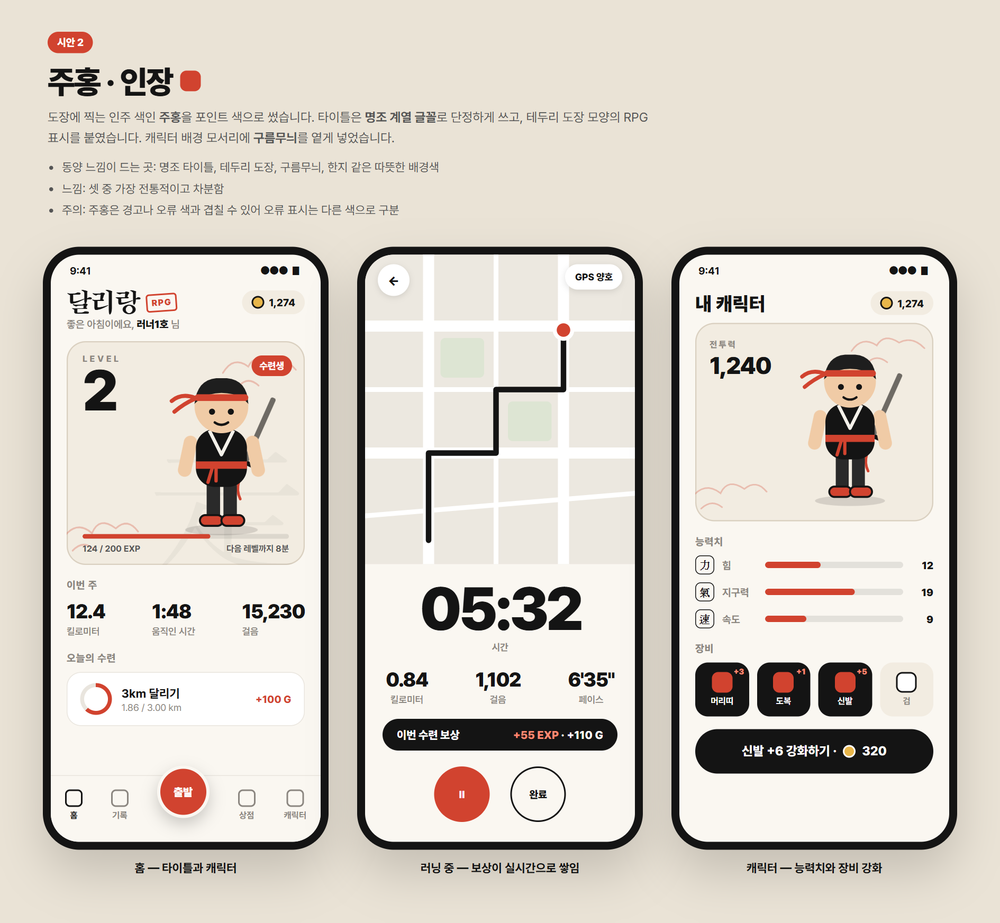
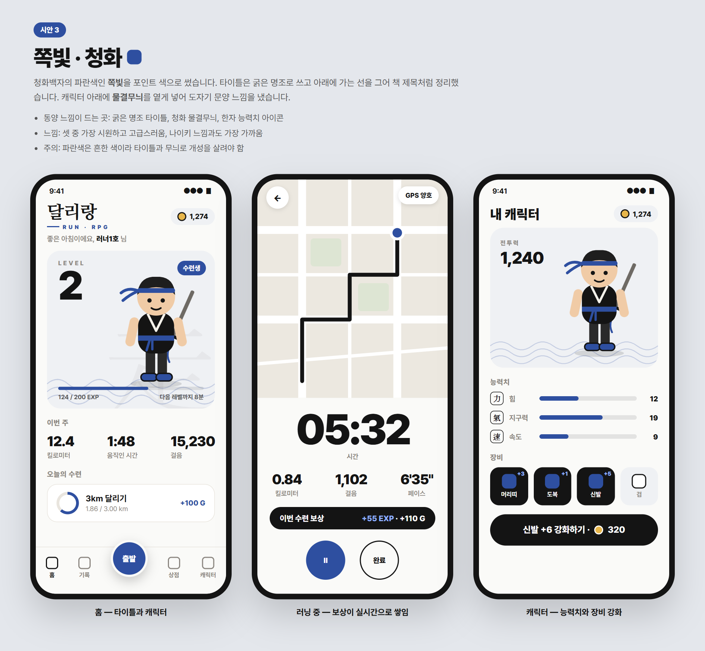

달리랑 RPG 시안 2차
1차 시안 A(스포츠 미니멀)의 깔끔함은 그대로 두고, 형광 연두 대신 새로운 포인트 색을 쓰고 달리랑 RPG 타이틀을 홈 맨 위에 크게 올렸습니다. 무협 느낌은 글꼴, 도장, 옅은 무늬, 캐릭터 옷차림으로 아주 살짝만 넣었습니다.

시안 1
자홍 · 먹붓
붓글씨 타이틀과 자홍색 낙관, 옅은 먹 산수. 셋 중 가장 생동감 있음.

시안 2
주홍 · 인장
명조 타이틀과 테두리 도장, 구름무늬. 셋 중 가장 전통적이고 차분함.

시안 3
쪽빛 · 청화
굵은 명조 타이틀과 청화 물결무늬. 셋 중 가장 시원하고 고급스러움.
한눈에 비교
| 1 자홍 · 먹붓 | 2 주홍 · 인장 | 3 쪽빛 · 청화 | |
|---|---|---|---|
| 포인트 색 | 자홍 #C8176B | 주홍(인주색) #D1432F | 쪽빛 #2E4FA0 |
| 타이틀 글꼴 | 붓글씨 (나눔손글씨 붓) | 명조 (송명) | 굵은 명조 (나눔명조) |
| 무늬 | 옅은 먹 산수 | 구름무늬 | 물결무늬 |
| 무협 느낌 | 살짝 강함 | 중간 | 가장 약함 |
| 분위기 | 젊고 활기참 | 전통적, 차분함 | 시원함, 고급스러움 |
세 시안 공통으로 바뀐 점
- 홈 맨 위에 달리랑 RPG 타이틀
- 캐릭터: 도복 옷깃, 허리띠, 휘날리는 머리띠, 등 뒤의 검
- 능력치 아이콘에 한자 力(힘) · 氣(지구력) · 速(속도)
- 말투를 살짝 바꿈: 오늘의 목표 → 오늘의 수련, START → 출발, 브론즈 러너 → 수련생
- 본문 글꼴, 숫자, 화면 배치는 1차 시안 A 그대로